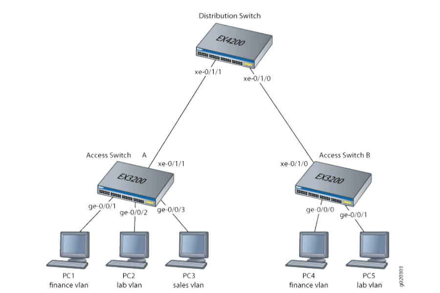

.jpg)
Switch, Gateway und Router
Diese Woche hatten wir das Thema Switch, Gateway und Router. Wir haben gelernt, wie diese Geräte funktionieren und wie sie in einem Netzwerk eingesetzt werden. Ein Switch verbindet mehrere Geräte in einem lokalen Netzwerk (LAN) und ermöglicht die Kommunikation zwischen ihnen. Ein Gateway dient als Schnittstelle zwischen verschiedenen Netzwerken und übersetzt die Daten, damit sie korrekt übertragen werden können. Ein Router hingegen leitet Datenpakete zwischen verschiedenen Netzwerken weiter und bestimmt den besten Weg für die Datenübertragung. Wir haben auch praktische Übungen gemacht, um zu verstehen, wie diese Geräte konfiguriert und verwendet werden. Insgesamt war es eine sehr informative Woche, die mir geholfen hat, die Grundlagen der Netzwerktechnologie besser zu verstehen.
Switch
Ein Switch ist ein Netzwerkgerät, das mehrere Geräte in einem lokalen Netzwerk (LAN) verbindet. Er ermöglicht die Kommunikation zwischen diesen Geräten, indem er Datenpakete an die richtigen Empfänger weiterleitet. Switches arbeiten auf der Data-Link-Schicht (Schicht 2) des OSI-Modells und verwenden MAC-Adressen, um die angeschlossenen Geräte zu identifizieren.
Gateway
Ein Gateway ist ein Netzwerkpunkt, der als Schnittstelle zwischen verschiedenen Netzwerken dient. Es übersetzt die Datenformate und Protokolle, damit die Kommunikation zwischen den Netzwerken reibungslos funktioniert. Gateways können auf verschiedenen Schichten des OSI-Modells arbeiten und sind oft für die Verbindung von LANs mit dem Internet verantwortlich.
Router
Ein Router ist ein Netzwerkgerät, das Datenpakete zwischen verschiedenen Netzwerken weiterleitet. Er analysiert die Zieladressen der Pakete und bestimmt den besten Weg für die Datenübertragung. Router arbeiten auf der Netzwerk-Schicht (Schicht 3) des OSI-Modells und verwenden IP-Adressen, um die angeschlossenen Netzwerke zu identifizieren.
Fazit
Diese Woche haben wir gelernt, was Switch, Gateway und Router sind. Wir haben gelernt, wie die Geräte funktionieren und welche Rolle sie in einem Netzwerk spielen.
- Ein Switch leitet Daten im Netzwerk an die richtigen Geräte weiter.
- Ein Gateway verbindet verschiedene Netzwerke und übersetzt Datenformate und Protokolle.
- Ein Router transportiert Datenpakete zwischen Netzwerken und sucht den besten Weg dafür.